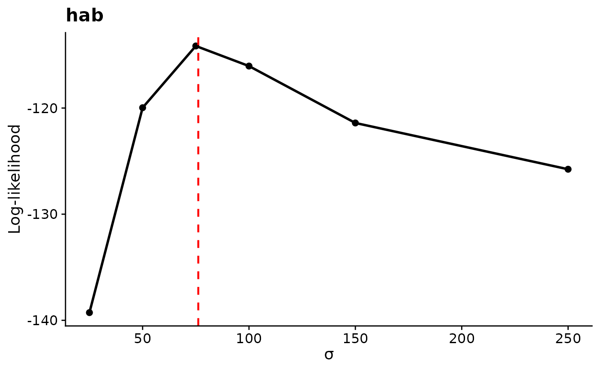

Evaluates the log-likelihood and AICc of a fitted model at a grid of sigma
values (or hard radii) for each optimized covariate. The resulting curve
shows whether an estimate sits at a clear optimum or on a flat plateau,
which tells you how well the data identify the scale of effect. Plot the
result with plot.sigma_profile().
Arguments
- x
A fitted
multiScaleRobject returned bymultiScale_optim(). A Bayesian fit frommultiScale_bayes()is refused; summarize its scales withposterior_scales()instead.- n_pts
Positive integer, at least 3. Number of sigma values in the generated grid for each covariate. More values give a smoother curve at the cost of more model refits. Ignored when
sigma_valuesis supplied. Default:10.- metric
Character. Which quantity
plot.sigma_profile()draws:"AICc"(default) or"LL"(log-likelihood). Both are always computed. The log-likelihood is highest, and AICc lowest, at the best-supported sigma.- verbose
Logical. Print a progress message for each covariate. Default:
TRUE.- n_cores
Optional positive integer. Number of CPU cores used to profile covariates in parallel, one covariate per worker (a PSOCK cluster). Default:
NULL(serial). The analytic, conditional-logistic, and joint mixed backends always profile serially.- spacing
Character. Spacing of the generated grid.
"log"(default) places more values at small sigma, where the likelihood usually changes fastest."linear"spaces them evenly. Ignored whensigma_valuesis supplied.- sigma_values
Optional positive numeric vector of sigma values, in map units, to evaluate directly. Duplicates are removed and the values are sorted, and at least 3 unique values are required. When supplied,
spacing,sigma_range, andn_ptsare ignored.- sigma_range
Optional positive numeric vector of length 2 giving the smallest and largest sigma, in map units, of the generated grid. Default: the search range of the fit,
min_Dtomax_D. Ignored whensigma_valuesis supplied.
Value
A list of class sigma_profile with these elements:
profiles: data frame with one row per covariate and grid value, and columnsvariable(covariate name),sigma(map units),LL(log-likelihood of the refit model), andAICc. AICc isNAwhen the number of observationsnis not larger thanK + 1, whereKis the parameter count.opt_sigma: named numeric vector with the estimated sigma of each covariate, in map units.metric: the metric chosen for plotting.spacing: the grid type,"log","linear", or"custom"(forsigma_values).sigma_grid: the sigma values evaluated, shared by all covariates.
How the profile is computed
For each covariate in turn, sigma is set to each grid value while every
other sigma (and any shape) stays at its estimate. The model is refit at
each value, so its coefficients adjust, and the log-likelihood is
recorded. Because the other scales are not re-optimized, a model with
several covariates gives a slice through the likelihood surface rather than
a full profile likelihood. AICc counts all free likelihood parameters
(including ancillary, unmarked detection, and variance parameters) plus
the estimated sigma and shape parameters, as in aic_tab(), and uses the
model's observation count.
How to read the profile. A sharp peak in log-likelihood (or trough in
AICc) at the estimate means the data identify the scale well. A flat curve
over a wide range means many scales fit about equally well, so treat the
estimate with caution. A curve still improving at max_D suggests the
scale may lie beyond the search range. In that case, increase max_D in
kernel_prep() and refit. For a profile-likelihood interval for sigma,
use summary(fit, profile = TRUE). See
vignette("v09-estimates-and-intervals", package = "multiScaleR").
If every refit fails and returns the optimizer's penalty value, profiling
stops with an error instead of returning an artificially flat profile.
Keep the model formula and data available to the stored model call, or
give multiScale_optim() a working refit_fn.
Profile a hard radius
Landscape metrics, unweighted surface metrics, and every covariate fitted
with kernel = "fixed" have a hard radius, so a cell either counts fully
or not at all. The covariate changes only when the radius passes a cell
center, so the likelihood changes in steps. The Hessian standard error is
therefore not a useful measure of uncertainty, and the default summary
shows NA for the standard error and Wald interval. Use this profile to
inspect the likelihood, and report the estimate as a radius in map units.
The plot joins grid values with straight lines, so it does not show the
steps between them, and an interval read from a profile cutoff does not by
itself establish coverage for a stepped likelihood. Candidate scales that
make a covariate undefined at a modeled observation are rejected during
fitting, so all likelihoods compare the same observations. Hard-radius
covariates can be profiled in exponential-power fits, and their unused
shape positions do not affect the profile or the parameter count. See
multiScaleR-kernels.
Analytic, conditional-logistic, and joint mixed fits
Fits from backend = "profile_glm", "joint_nb2", "conditional_logit",
and "joint_mixed" profile serially, and every sigma value must lie
within the fitted bounds (min_D to max_D). For a "conditional_logit"
fit, each grid value is the log-likelihood of a native
survival::coxph() refit at that sigma, with the coefficients refit and
every other scale held at its estimate. That backend withholds scale
uncertainty, so summary(fit, profile = TRUE) returns no profile interval
for it. The grid describes the likelihood surface only.
For a "joint_mixed" fit, each grid value is the log-likelihood of a new
native glmmTMB fit at that sigma, the same refit the backend uses to
check each start. The coefficients, the random-intercept standard
deviation, and any NB2 dispersion are re-estimated, the random intercept is
integrated out with the Laplace approximation, and every other scale stays
at its estimate. A refit that fails gives NA at that value, and
profiling stops if every refit for a covariate fails.
Examples
# \donttest{
data("pts")
data("count_data")
hab <- terra::rast(system.file("extdata", "hab.tif",
package = "multiScaleR"))
kernel_inputs <- kernel_prep(pts = pts,
raster_stack = hab,
max_D = 250,
kernel = "gaussian",
verbose = FALSE)
mod <- glm(y ~ hab, family = poisson,
data = data.frame(count_data["y"], kernel_inputs$kernel_dat))
opt <- multiScale_optim(fitted_mod = mod,
kernel_inputs = kernel_inputs,
verbose = FALSE)
## Default: 10 log-spaced values from min_D to max_D
prof <- profile_sigma(opt, verbose = FALSE)
# Log-likelihood and AICc at each sigma (m)
prof$profiles
#> variable sigma LL AICc
#> 1 hab 10.00000 -150.4780 307.2941
#> 2 hab 14.29969 -148.3958 303.1297
#> 3 hab 20.44812 -143.4012 293.1404
#> 4 hab 29.24018 -135.4055 277.1490
#> 5 hab 41.81255 -125.0251 256.3882
#> 6 hab 59.79066 -116.1267 238.5913
#> 7 hab 85.49880 -114.5376 235.4132
#> 8 hab 122.26064 -118.7302 243.7984
#> 9 hab 174.82895 -123.0816 252.5013
#> 10 hab 250.00000 -125.7652 257.8684
plot(prof) # AICc is lowest near the estimated sigma (dashed line)
## Linearly spaced values between explicit limits
prof <- profile_sigma(opt, n_pts = 8, spacing = "linear",
sigma_range = c(25, 250), verbose = FALSE)
## Your own sigma values, drawn as log-likelihood
prof <- profile_sigma(opt, sigma_values = c(25, 50, 75, 100, 150, 250),
metric = "LL", verbose = FALSE)
plot(prof) # log-likelihood peaks near the estimate

# }